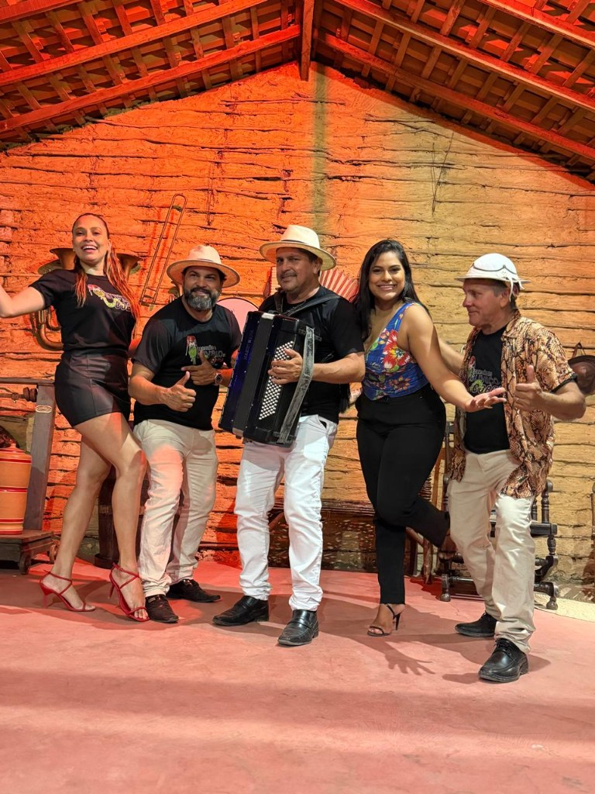
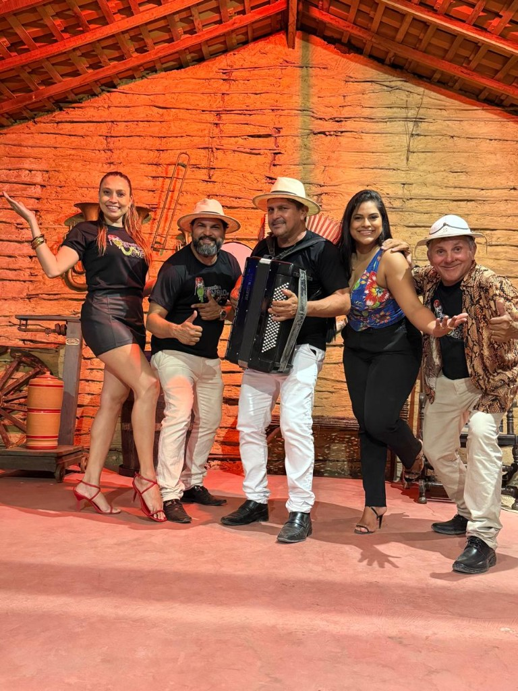
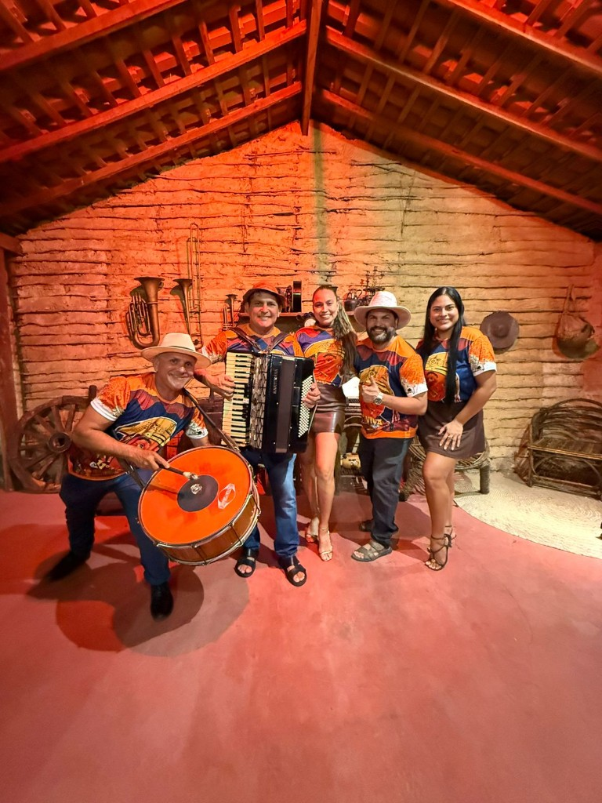

Alexandre
Voz e Violão

Forró Pé de Serra · São Luís — MA
Show NORDESTINAMENTE
Raiz, dança e tradição nordestina — forró pé de serra que agrada todas as gerações
É uma banda do tradicional Forró Pé de Serra de São Luís. Formada há 7 (sete) anos pelos irmãos Andresinho do Acordeon, Adevaldo e Alexandre, filhos de Sr. Raimundo e Dona Simone — família tradicional do bairro São Cristóvão em São Luís, pioneiros no ramo de alimentos.
Dona Simone, conhecida por fazer a melhor Carne de Sol da Ilha de São Luís, deu o nome ao grupo e a primeira sanfona de presente. O Bar da SIMONE — Restaurante Cantinho dos Amigos foi o berço do Forrozão Suvaco de Cobra, por onde passaram artistas renomados como João do Vale e Alcione, além de violeiros, poetas e repentistas como Jonas de Oliveira e Poeta Raimundo Nonato.
O grupo valoriza as músicas regionais do pé de serra com a irreverência de um show descontraído e alegre — repertório raiz e atual ao mesmo tempo, quebrando paradigmas e agradando todas as gerações.

Voz e Violão
Voz e Acordeon
"All right"
Voz e Zabumba
Voz
Voz
Bateria
Guitarra e Baixo

O show Forrozão Suvaco de Cobra: "NORDESTINAMENTE" nos remete à verdadeira música nordestina, com canções do tradicional pé de serra: xote, xaxado, baião e arrasta-pé. Proporcionando um show alegre, dançante e envolvente, misturando o tradicional com a modernidade.
Valorizamos os ritmos tradicionais da música maranhense: bumba boi, cacuriá e quadrilhas de São João. O repertório contempla grandes artistas como João do Vale, Luiz Gonzaga, Alceu Valença, Flávio José, Falamansa, Trio Nordestino, Os Três do Nordeste, Dominguinhos e outros.
Confira onde o Forrozão Suvaco de Cobra vai estar em maio e junho. Chegue cedo e garanta o seu forró!
Grill Rei de França
19h
São Cristóvão
19h
22h
14h
22h
Restaurante do Mestre Manga — Av. Litorânea
14h
19h
Quer o Forrozão no seu arraial ou evento?
Solicitar orçamentoAlgumas das músicas do show NORDESTINAMENTE — pé de serra que faz dançar.
| Música | Compositor |
|---|---|
| Xote da Alegria | Falamansa |
| Xote dos Milagres | Falamansa |
| Rindo à toa | Falamansa |
| Na Asa do vento | João do Vale |
| Carcará | João do Vale |
| Teresina a São Luís | João do Vale |
| Numa sala de reboco | Flávio José |
| Tareco e Mariola | Flávio José |
| Seu Olhar não mente | Flávio José |
| Você endoideceu meu coração | Nando Cordel |
| Vontade | Santana O Cantador |
| Cheiro de nós | Santana O Cantador |
| Mensageiro Beija Flor | Santana O Cantador |
| Ana Maria | Santana O Cantador |
| Quem nem jiló | Luiz Gonzaga |
| Eu só quero um xodó | Dominguinhos |
| Forró Desarmado | Trio Nordestino |
| Danado de Bom | Luiz Gonzaga |
| Forró de Tamanco | Os Três do Nordeste |
| Forró No Escuro | Luiz Gonzaga |
| É Proibido Cochilar | Os Três do Nordeste |
| Forró do Xenhenhem | Elba Ramalho |
| Feira de Mangaio | Clara Nunes |
| Anunciação | Alceu Valença |
São João, festas, casamentos, arraiais e eventos corporativos. Fale com a gente e garanta um show nordestino inesquecível.
Apoio